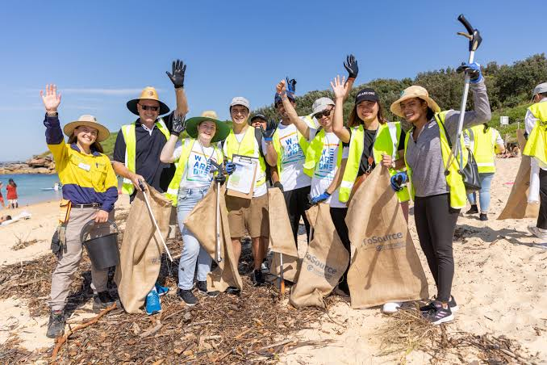

Welcome to Ocean Guardian! We are dedicated to protecting the ocean and the wildlife in it.
Our goal is to create a New Zealand where marine life is preserved for the future generations.
Our plan is to use our resources to create reserves and stop illegal fishing and over fishing.
Our mission is to make New Zealand a land of the Ocean. We aim to make a positive difference by going against corrupt fishers and stopping the marine life on our shore to be caught to the extent of extinction.
We believe in:
At Ocean Guardian, we strive to stand out through our commitment to quality, reliability, and customer satisfaction. We work hard to ensure that every customer receives the best possible experience.
We are always looking for ways to grow, improve, and better serve our customers. Thank you for being part of our journey!
Have questions or want to learn more about us? Visit our Contact Us page to get in touch!